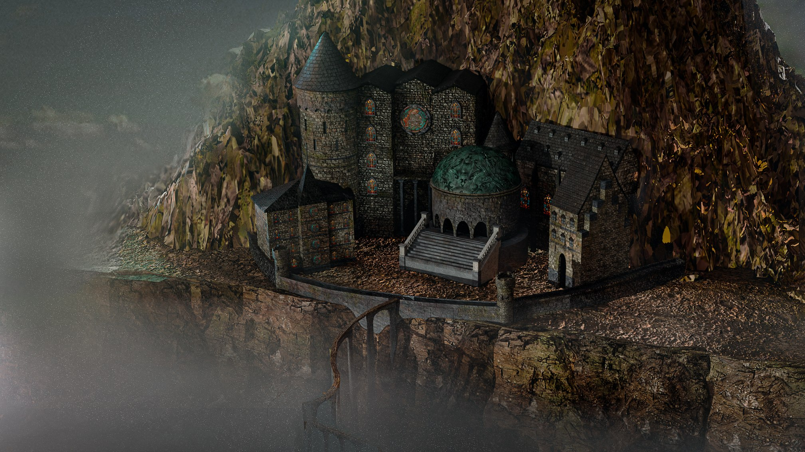
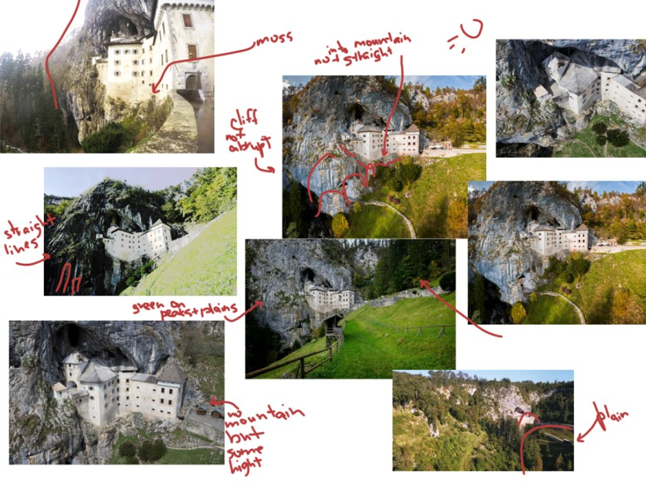
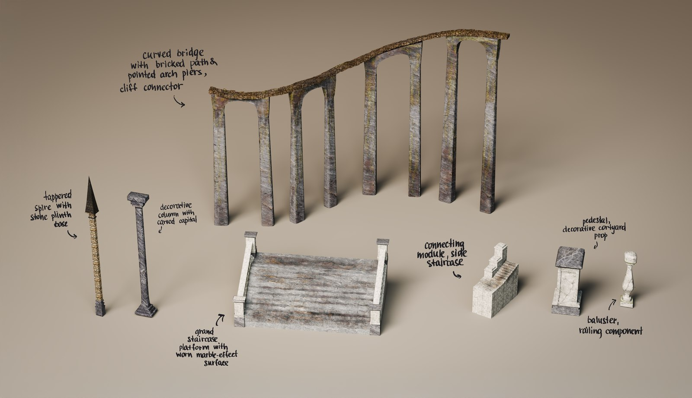
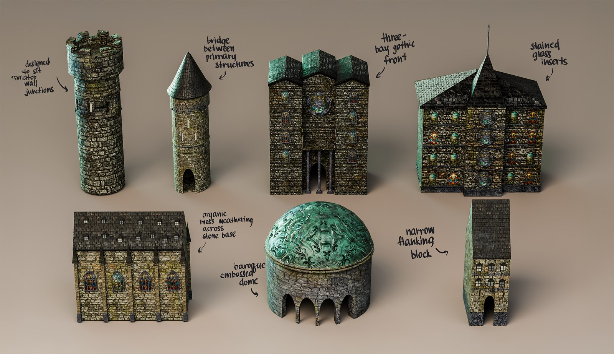
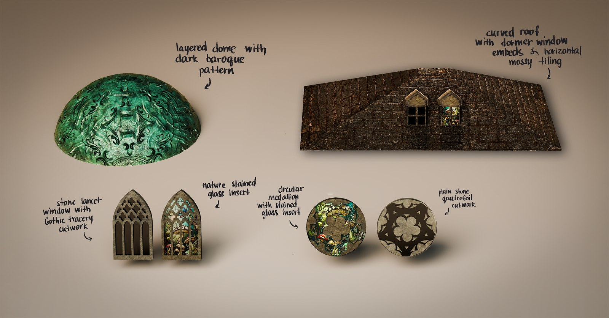
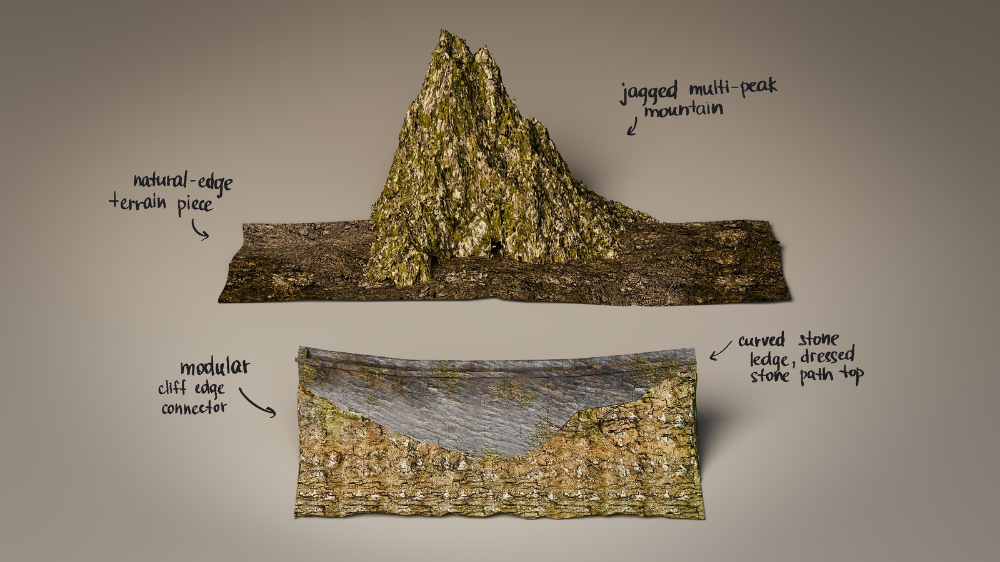

The Academy on the Cliff
A fantasy building carved into a mountainside, reached by a single bridge over a drop. A full environment, built from concept research through modular assets to an animated final render.

The source
The scene comes from the book Fourth Wing: a girl crossing a narrow, unsteady bridge to reach the academy. The book's descriptions set the brief for each building.
The brief
Take one scene from environmental concept to final animated render. Vertical format for social media.
Reference
Predjama Castle in Slovenia, built into a cliff face.

Modular breakdown
Every structure was built as a separate asset.




Process
Credits
- Role
- 3D Environment Artist (modelling, texturing, lighting, edit)
- Year
- 2025
- Tools
- Blender, Substance Painter, After Effects, Photoshop
- Tutor
- John Halpin
- HDRI
- Kloppenheim 04 by Greg Zaal, Poly Haven